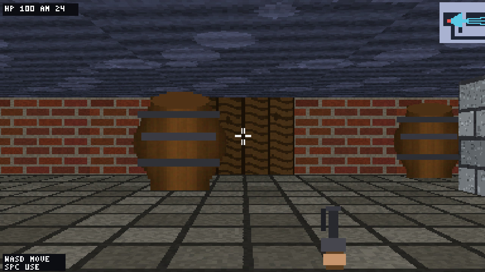

8 November 2026 · Agentic task loop · first-person raycaster
Raycaster Shooter · Sushi 1.5.1 · Tenaz 0.5.0 (mixed)
Tenaz ended in COMPLETE after 19 h 20 min, 60 sessions and 19 tasks; the final review accepted in its second cycle and 29 model-written checks pass. Four operator pauses changed the runner build, the engine's prefix-cache entries, vision (off by mistake until session 046) and the idle limit; no model-written code, notes or checks were edited. Played by Claude in a browser, all eight Must have items pass, but the enemy walks into the player and disappears, never attacks, and the look is plain.

What was checked
- Runner final state COMPLETE on 8 November 19:28:18.634 UTC: 19 tasks done, none pending. Final review cycle 1 returned CHANGES and added T019 (the spawn barrel was fully visible and the barrel the check counted as partial was fully hidden); cycle 2 returned ACCEPT with verify passing and all 26 extracted requirements covered, one (R26) by hand. These are the model-written checks and reviews, not a hidden acceptance suite.
- Played on 8 November by Claude in a browser. Key holds and mouse moves were sent as real DOM events to the game's own handlers (automated clicks get no pointer lock and key taps last under a frame); the debug hook was used only to read state. Walking runs at about 3.05 cells/s and stops at the closed door and at brick walls; mouse turning works through the pointer-lock handler with the lock simulated.
- Must have results: straight walls at an angle; brick, stone and wood textures; side shading 0.7 vs 1.0 and distance shading 0.69 at 4 cells and 0.42 at 8 (present but faint on screen); textured floor and ceiling; a barrel partly hidden behind a stone wall edge at spawn; Space opens the spawn door; left click fires with a muzzle flash and ammo count, each hit flashes the enemy and the third drops it to a fallen sprite that stays. All eight pass.
- Gameplay faults found in play: the enemy chases into the player's own cell and stands inside the camera, where it is culled, so it vanishes and cannot be shot; it never attacks and health stays at 100. Behind the door a barrel stands in the line of sight and hides the approaching enemy; hitscan ignores barrels. The game takes keys only after a first click. Blocky enemy art and a small gun. The operator's own impression was that it does not look good.
- Vision: the run was initialized without --vision, so dsh refused all 16 image reads in sessions 001-045, including the screenshot reviews of T001, T003, T006, T007, T013 and T014 and the three builder sessions of the visual polish task T014. From session 046 the model read screenshots with no error and described them correctly. The visual quality of the first part was built without seeing its own screenshots.
- Engine metrics: all 1561 proxy responses match Sushi summaries one-to-one by (prompt, output, cached) across the three process logs; forward-earliest and backward-latest matches agree. 39 Sushi summaries are unassigned and excluded: 4 preflight, 28 from an accidental fresh restart of the same brief in another folder (paused in bootstrap and discarded) and 7 client disconnects at pauses and watchdog aborts.
- Runner interventions: (1) pause at session 034, runner 6e5b7cd -> 2b07ce0 (earlier reasoning removed in steps once it passes 8192 tokens instead of on every request), templates identical; (2) pause at 041, Sushi restarted with --prefix-cache-entries 2; (3) pause at 045, config.input set to [text, image] in .tenaz/run.json by hand and Sushi back to one entry; (4) pause at 056, params.idleAbort raised from 20 to 40 by hand. 424.76 seconds paused in total.
- The idle rule cut four builder sessions (042, 050, 054, 055) and two of T019's three attempts while the builder was reading files through bash and running probe scripts, which the watchdog does not count as progress; intervention 4 relaxed it for the last attempt.
- Prompt cache by part: sessions 001-034 84.5% (6e5b7cd, one entry), 035-041 88.2% (2b07ce0, one entry), 042-045 84.3% (two entries), 046-060 90.8% (one entry, vision). dsh summarized its own context 71 times; the following request kept at least 80% of its prompt cached in 9 of 70 cases, with one or two entries alike.
- Public artifact: the reviewed static build (vite build --base ./ from the final project commit, unchanged source) and one spawn-view screenshot captured from it at 1280x720. The prompt is the author's and is not republished; the project, raw logs, journal and sessions stay in the ignored local archive.
Limits of this evidence
Completion is the runner outcome. The run mixes two Tenaz builds, two prefix-cache settings and a late vision fix, so its performance figures describe this execution, not a single configuration. The Tenaz builds were unreleased branches at the time (generic ACP agents with --harness dsh and the late-text fix; earlier reasoning removed in steps). The playthrough was by Claude, with the controls driven through DOM events.
Configuration
The model, serving engine and agent used for this execution.
| Field | Value | Detail |
|---|---|---|
| Model · primary | Qwen 3.8 Flash Next · primary · reasoning medium | EXL3 K=2.625 experts, 8-bit dense weights; 16-bit n-gram table, memory-mapped and read from SSD |
| Checkpoint · primary | Qwen3.8-Flash-Next-Sushi-2.6bpw | primary model artifact |
| Runtime | Sushi 1.5.1 · MLX 0.32.3 · Three OpenAI-compatible server processes in sequence on one port, each started with the production arguments: KV8, MTP with MTP-head KV quantization, 512-token prefill chunks, 16384 maximum output tokens, 20 GB SSD prefix cache, temperature 0. The first and third used one prefix-cache entry; the second (sessions 042-045) used two. All 1600 logged generation headers report temperature 0, top-p 0.95, top-k 20 and thinking=true. Startup scanned 34, 3 and 4 persisted cache entries (about 20141, 15489 and 18388 MB). mode | inference engine and exact build |
| Harness | DeepSeek Harness over ACP driven by Tenaz 0.5.0 (6e5b7cd, then 2b07ce0; unreleased branches) 0.2.2-rc.1 | the agent or client that drove the run |
| Runner | Tenaz 0.5.0 · builds 6e5b7cd → 2b07ce0 (unreleased) | open-source runner, github.com/aartiles/tenaz · how the runner evolved |
| Hardware | Apple MacBook Pro · 64 GB unified memory | hardware recorded for this execution |
| Workload | Raycaster Shooter · revision 1 | One-shot raycaster brief by @ddalcu, as posted by @Beamsters1, used verbatim as the Tenaz brief; Tenaz wrote its own verify and task plan. A mixed run: two Tenaz builds, two prefix-cache settings and vision turned on only from session 046, each change made during a pause. Not a controlled or repeated measurement. |
| Context window | 131,072 tokens | maximum context configured for the serving runtime |
| Repetitions | 1 | executions recorded for this workload; one means an indicative result, not an estimate |
Inference measurements
Engine-side rates for this run. Each figure states its own statistic; figures from different runs are not interchangeable.
| Metric | Value | Definition |
|---|---|---|
| TTFT · median | 2.40342 s | Median engine-reported TTFT across matched responses, from engine timing fields retained by the proxy. · n=1561 · Mean 5.99 s. |
| Decode · per-request median | 48.1013 tok/s | Median of per-request output_tokens / engine decode_s across matched responses. · n=1561 |
| Decode · output-weighted | 46.2334 tok/s | Total matched output tokens divided by the sum of engine decode_s. · n=1561 |
| Draft acceptance | 64.4855 % | Sum of accepted MTP draft tokens divided by sum of drafted MTP tokens from matched engine request statistics. · n=1561 · 1574626 accepted / 2441829 drafted tokens. |
| Swapped in during the run | 6.52364 GiB | Sum of sampled swapins_delta * page_bytes / 2^30 across the run; host-wide cumulative swap I/O, not resident memory. · n=2402 · Pressure normal or warning; maximum swap occupancy 5.85 GiB; minimum sampled free memory 0.07 GiB. |
| Server process memory · peak | 49 GiB | Maximum sampled Sushi process footprint, rounded by the monitor. · n=2402 |
Agent session counters
Agent-wide usage totals. These include reasoning, tool calls and waiting, and are not model decode speed.
| Metric | Value | Definition |
|---|---|---|
| Run elapsed | 1160.3 min | Session 001 start after the preflight (8 November 00:08:00.997 UTC) to COMPLETE (19:28:18.634 UTC); includes tools, checks, retries and four pauses. · n=1 · 19 h 20 min 17.6 s; 424.76 seconds paused. |
| Agent sessions | 60 sessions | All harness sessions: 3 bootstrap, 32 builder, 19 reviewer, 4 replan and 2 final reviewer. · n=1 |
| Sessions ended early | 12 sessions | Sessions with ok=false: 4 turn-budget stops (60/40), 4 idle-watchdog stops and 4 operator pauses. · n=60 |
| Operator interventions | 4 actions | Four pauses: runner build change; Sushi restart with two prefix-cache entries; vision enabled and Sushi back to one entry; idleAbort raised to 40. · n=1 · run.json edited by hand twice (vision, idleAbort); no edits to model-written code, notes, checks or task cards. |
| Model responses | 1,561 responses | All proxy request records; every one completed with engine timings and none ended in error. · n=1 |
| Matched model requests | 1,561 requests | Proxy responses matched one-to-one, monotonically and uniquely to Sushi log summaries by total prompt, output and cached-token triple across three process logs. · n=1 · Forward-earliest and backward-latest matches agree. 39 engine summaries unassigned: 4 preflight, 28 discarded restart, 7 client disconnects. |
| Tool calls | 1,767 calls | Sum of harness tool_calls across all 60 session records; zero repaired tool calls. · n=60 |
| Context compactions | 0 compactions | Tenaz compaction count across all session records. dsh's own 71 context-summary requests (max_tokens 65536) are counted in model_responses, not here. · n=60 |
Context and token counters
Token totals as reported by the harness or engine. Cached and cumulative figures are not additive with fresh input.
| Metric | Value | Definition |
|---|---|---|
| Maximum prompt context | 53,203 tokens | Maximum prompt input across the matched responses; not the configured server window. · n=1561 |
| Cumulative input | 43,397,850 tokens | Sum of total prompt tokens across matched responses, including repeatedly reused context; not unique input. · n=1561 |
| Cached input | 37,730,442 tokens | Sum of prompt tokens reported cached for matched responses. · n=1561 |
| Fresh input | 5,667,408 tokens | Total prompt input minus cached input for matched responses. · n=1561 |
| Output tokens | 2,648,130 tokens | Sum of output tokens across matched responses, including reasoning output. · n=1561 |
| of which reasoning output | 2,077,283 tokens | Sum of reasoning tokens reported by the proxy for matched responses; a subset of output tokens. · n=1561 |
| Prompt-cache token share | 86.9408 % | Cached prompt tokens divided by total prompt tokens, weighted by tokens across matched responses. · n=1561 · Mixed run: 84.5% in sessions 001-034, 88.2% in 035-041, 84.3% in 042-045 and 90.8% in 046-060. Warm SSD cache at each start; not a cold-prefill measurement. |
Recorded check counters
Counts from the checks recorded with this run.
| Metric | Value | Definition |
|---|---|---|
| Tasks completed | 19 tasks | Final task cards marked done, including T019 added by the first final review; none active, todo or blocked. · n=1 |
| Reviews returning changes | 0 reviews | Task review verdicts returning CHANGES; all 19 task reviews returned ACCEPT. The first of two final reviews returned CHANGES. · n=19 |
| Project checks passing | 29 checks | Checks passing at the last runner verification before COMPLETE; final reviewer returned ACCEPT. · n=1 · Model-written checks, not an independent acceptance suite. |
Request records & provenance
1561 numeric request records, numbered in proxy order, each uniquely matched to a Sushi summary by total prompt, output and cached tokens across three process logs. TTFT and decode use engine timing retained by the proxy; MTP counts come from the matched engine statistics. Preflight, discarded-restart and client-disconnect summaries are excluded. No prompts, tool results, session identifiers or local paths are included.
Run ID: 2026-11-08-qwen38-flash-next-sushi-v151-26bpw-tenaz-dsh-raycaster-shooter
One execution, with checks transcribed from the retained record. A completed session is not a quality score. Measurement method · All runs